“Paradise Theme” Documentation by “ThemeMakers” v2.0
“Paradise Theme”
Created: 02/02/2011
By: ThemeMakers
http://themeforest.net/user/ThemeMakers
Thank you for purchasing our theme. If you have any questions that are beyond the scope of this help file, please feel free to email via my user page contact form here. Thanks so much!
Table of Contents
- Installation
- Custom Menus
- Theme Options
- Custom Widgets & Locations
- Supported Plugins
- Shortcodes
- Extra documentation to Help managing this theme
- Custom Page Templates
- Post Thumbnails
- CSS Files and Colour Schemes
- JavaScript
- PSD Files
- Sources and Credits
A) Installation - top
The theme can be uploaded in two ways:
- FTP upload: Using your FTP program, upload the non-zipped Paradise folder into the /wp-content/themes/ folder on your server.
- WordPress upload: Navigate to Appearance > Add New Themes > Upload. Go to browse, and select the zipped Paradise folder. Hit Install Now and the theme will be uploaded and installed.
Once the theme is uploaded, you need to activate it. Go to Appearance > Themes and activate Paradise theme.
One important note: Please make sure that your theme's "cache" directory has attributes with "775" or "777" to get it work properly. For example if you use a FileZilla FTP client see the screenshots below how to do it:
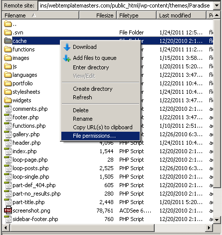
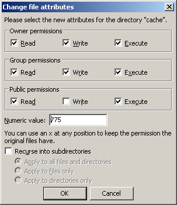
B) Custom Menus - top
If you use version 3.0+ of WordPress, you can setup custom menus to use with our theme. Paradise comes with one custom menu location. It is used for the site's main navigation, also you can create more and place them into sidebars if needed.
Setting up custom menus (WP3.0+)
Go to Appearance > Menus. Give your menu a name and build it up using little widgets on the right. You can add pages, categories or custom URLs.
Now simply select the theme location for your newly created menus using a widget on the left. Under Primary Navigation, select your menu from the dropdown list, to use it as the site's main navigation.
C) Theme Options - top
Paradise comes with a simple to use administration panel. You can access it by navigating to Appearance > Theme Options. The theme options are conveniently spread over a number of tabs. Each tab contains the options that pertain to a particular area of the theme.
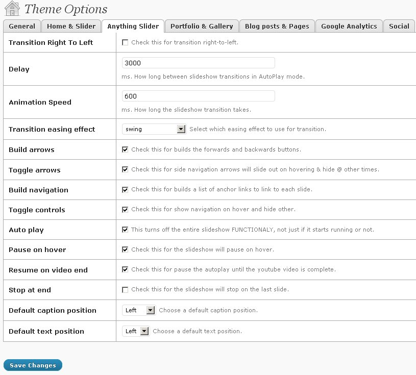
D) Custom Widgets & Locations - top
Paradise comes with unlimited widget areas and 4 custom built widget that can be used multiple times. They can be found under Appearance > Widgets. Widget areas are as follow:
See the video on How to manage unlimited sidebars.
E) Supported Plugins - top
Paradise comes with styles for two popular plugins which you may wish to use. Should you wish to do so, make sure to download latest version of them, install them in your /wp-content/plugins/ directory and activate them in the Appearance > Plugins menu.
In both cases you simply need to activate the plugins and the theme will do the rest.
- WP-PageNavi - http://wordpress.org/extend/plugins/wp-pagenavi/
- Contact Form 7 - http://wordpress.org/extend/plugins/contact-form-7/
F) Shortcodes - top
The Paradise theme supports the use of over 15 shortcodes for styling purposes. To know how to use them please see the demo page here. Also there you can find many samples of their using.
Feel Free to contact us if you will have any questions.
G) Extra documentation to Help managing this theme - top
Setting up slideshow, adding an images with their descriptions (captions)
Choose your Front page:
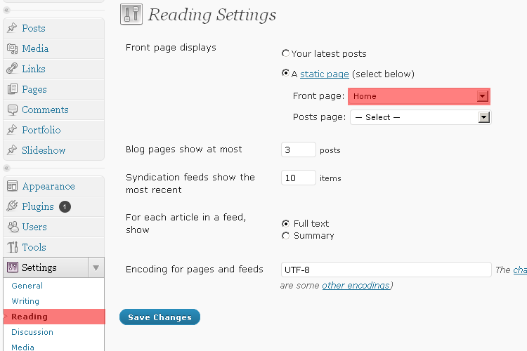
Choose your slider type from dropdown list from here Appearance -> Theme Options -> Home&Slider:
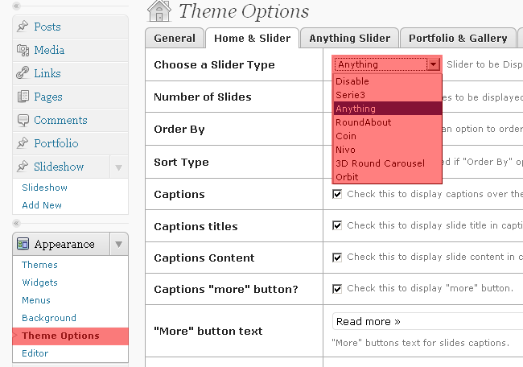
See marked area where should you to click to start creating slides for your slider on the screenshot below:
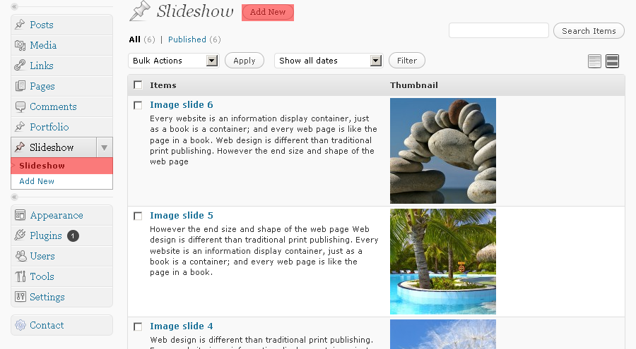
Screenshot below showing us how to add a slide to your slider (there should be at least 2-3 slides to see slider's work properly):
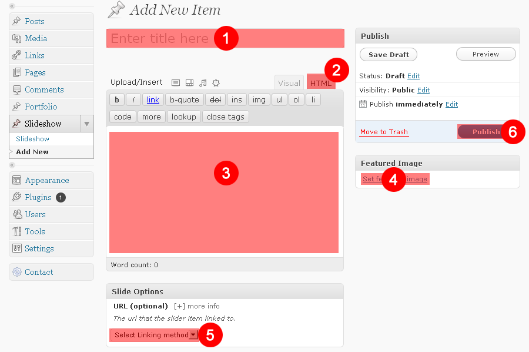
There are 6 quick and easy steps to add a new slide to slider:
- Enter title in area marked with #1
- Choose a html mode for editor as showed around #2
- Type your text for caption (optional) #3
- Set your featured image for slide #4
- Select linking method if you want it to link to page, category, post, portfolio or type a link manually #5
- press Publish button #6
There are also four additional options for each slider below (Important notice: you should choose your slider from Appearance -> Theme Options -> Home&Slider before you see the options below):
- Serie3 slider:
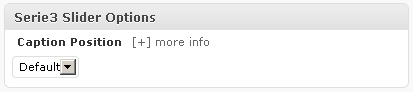 - Anything slider:
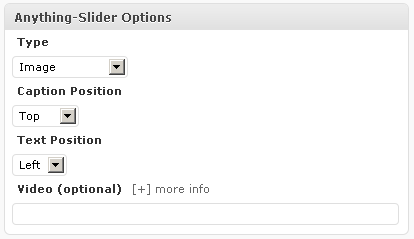 - Nivo slider:
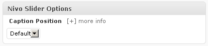 - Coin slider:
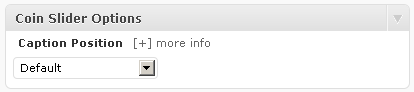
Setting up the Home page like a demo
Just copy and paste the code below to your editor when editing/creating your home page using a HTML mode tab (Pages -> Home):

Important notice: before saving your page, please make sure that your full path's to images are proper, just find images shortcodes (like this:[img w="270" h="115" mbottom="8"]PLACE_THERE_FULL_PATH_TO_YOUR_OWN_IMAGE[/img] ) in the code below and replace them with yours.
[raw]
[columns indent="45"]
[column]
[h2]Clean Design[/h2]
[img w="270" h="115" mbottom="8"]your_domain_name/wp-content/uploads/paradise/2010/10/pic1.jpg[/img]
<p>Donec accumsan malesuada orcidonec sitmet eros lorem isum dolor amet incon. Adipiscing eli
maurise pharetra magna accumsan.</p>
[btn align="left"]read more[/btn]
[/column]
[column]
[h2]Flexibly Frontpage[/h2]
[img w="270" h="115" mbottom="8"]your_domain_name/wp-content/uploads/paradise/2010/10/pic2.jpg[/img]
<p>Donec accumsan malesuada orcidonec sitmet eros lorem isum dolor amet incon. Adipiscing eli
t maurise pharetra magna accumsan.</p>
[btn align="left"]read more[/btn]
[/column]
[column]
[h2]Web Development[/h2]
[img w="270" h="115" mbottom="8"]your_domain_name/wp-content/uploads/paradise/2010/10/pic3.jpg[/img]
<p>Donec accumsan malesuada orcidonec sitmet eros lorem isum dolor amet incon. Adipiscing eli
maurise pharetra magna accumsan.</p>
[btn align="left"]read more[/btn]
[/column]
[/columns]
[block]
[columns]
[column]
[hover_box]
[h3 icon="address" left="37"]Easy Customization[/h3]
<p>Adipising elit maurise pharetra magna acumsan. Malesuda orcdonec ulorem doloroec malesd
a udipiscing elit mauris sifermentum.</p>
[/hover_box]
[/column]
[column]
[hover_box]
[h3 icon="archives" left="37"]Shortcodes[/h3]
<p>Adipising elit maurise pharetra magna acumsan. Malesuda orcdonec ulorem doloroec malesd
a udipiscing elit mauris sifermentum.</p>
[/hover_box]
[/column]
[column]
[hover_box]
[h3 icon="communication" left="37"]Custom Widgets[/h3]
<p>Adipising elit maurise pharetra magna acumsan. Malesuda orcdonec ulorem doloroec malesd
a udipiscing elit mauris sifermentum.</p>
[/hover_box]
[/column]
[/columns]
[columns]
[column]
[hover_box]
[h3 icon="pencil" left="37"]Quality Work[/h3]
<p>Adipising elit maurise pharetra magna acumsan. Malesuda orcdonec ulorem doloroec malesd
a udipiscing elit mauris sifermentum.</p>
[/hover_box]
[/column]
[column]
[hover_box]
[h3 icon="publish" left="37"]Works Everywhere[/h3]
<p>Adipising elit maurise pharetra magna acumsan. Malesuda orcdonec ulorem doloroec malesd
a udipiscing elit mauris sifermentum.</p>
[/hover_box]
[/column]
[column]
[hover_box]
[h3 icon="lightbulb" left="37"]Light Ideas[/h3]
<p>Adipising elit maurise pharetra magna acumsan. Malesuda orcdonec ulorem doloroec malesd
a udipiscing elit mauris sifermentum.</p>
[/hover_box]
[/column]
[/columns]
[/raw]
Making a contact form in footer sidebar:
please do the following things to create a contact form in your footer sidebar:
- Install a WP plugin Contact Form 7 - http://wordpress.org/extend/plugins/contact-form-7/
- Install a WP plugin Contact Form 7 Widget - http://wordpress.org/extend/plugins/contact-form-7-widget/
- Create a contact form using Contact Form 7 plugin and place a code below into form field and press "save" button:
<p><label>Name</label> [text* your-name]</p> <p><label>Email</label> [email* your-email]</p> <p>[textarea your-message]</p> <p>[submit "Send"]</p>
- Copy the shortcode's name of this already created form. For example [contact-form 2 "Widget CF7"]
- Create a sidebar for your footer (Appearance -> Widgets) and place there a widget called "Contact Form 7"
Fill out the widget fields like it done in the screen below:

- That's all. Enjoy it!
Contact Page's Form
Use the code below for the CF7 plugin's form field when creating a new form for contact page:
<p>Your Name (required)<br /> [text* your-name] </p> <p>Your Email (required)<br /> [email* your-email] </p> <p>Subject<br /> [text your-subject] </p> <p>Your Message<br /> [textarea your-message] </p> <p>[submit "Send"]</p>
Conact Us Page
You need to choose a full width layout and place into editor the code below using html mode:
[columns indent="50"] [column places="2"] [h2]GET IN TOUCH[/h2] Donec accumsan malesuada orcidonec sitmet eros lorem isum dolor amet incon. Adipiscing elit maurise pharetra magna accumsan. Malesuada orcdonec umet lorem doloronsec tetuer malesuada. Udipiscing elit mauris sifermentum. Tellus dolor, dapibus eget, elementum. Unean auctor wisi eturna. Aliquam erat volutpat. Duis turpis. Integer rutrum ante eu lacus consectetuer. Adipiscing elit. Maurisfetun Duis ultricies pharetra magna. Donec accumsan malesuada orci. Donec amet eros. [h2]SEND US MAIL[/h2] [contact-form 1 "Contact form 1"] [/column] [column] [h2]Location[/h2] [img w=259 h=300]http:/your_domain_name/wp-content/uploads/paradise/2010/10/gmap.jpg[/img] [h2]HEAD OFFICE[/h2] <address> <strong>Address Info:</strong><br>123 Main Street Los Angeles, CA, 94101<br> <strong>Phone:</strong> +1 800 123 4567<br> <strong>FAX:</strong> +1 800 891 2345<br> <strong>Email:</strong> testmail@sitename.com </address> [/column] [/columns]
Creating a Blog Page
To create a blog page you should do the following things:
- Create a main category for example call it "Blog" (you also can create a lot of nested subcategories for blog category, all of them will display under "Blog")
- Using a wp menus option add a category "Blog" to your navigation bar
H) Custom Page Templates - top
The Paradise theme comes with sixth inbuilt custom page templates; Blog Page Layout, Full Width Page Layout, Layout with left Sidebar, Layout with right sidebar, Portfolio Page Layout and Gallery Page Layout. These templates can be used on individual pages to alter the display or functionality.
Blog Page Template
The Paradise theme comes packed with a simple blog template. To use the template, simply create a category (also can be choosen with subcategories) and then use it from custom menu for navigation.
Full Width, Left Sidebar, Right Sidebar Pages Layouts
The Full Width template allows the creation of a page without a sidebar. The main content will span the full width of the site. To use the template, simply create a page using the "Full WIdth Page Layout" page template.

Portfolio and Gallery Templates
The "Portfolio and Gallery" template allows the creation of a page without a sidebar but with thumbs and their titles also small descriptions. To use the template, simply create a page from the "Portfolio" or "Galleries" Page page in wp-admin panel.
I) Post Thumbnails - top
The Paradise theme supports the use of Post Thumbnails. Note: you must have WordPress version 2.9 or later to use this feature. The theme supports auto-resizing of the post thumbnails and so there is only the requirement to specify a single image. Auto-resizing will only occur however when the image is uploaded for the first time, images that have previously been uploaded will not be resized.
To ensure the correct display of images across your site, ensure you specify an image with dimensions of 930 x 450 or larger.
 To upload a post thumbnail, go to Posts -> Add New or open an existing post in editing mode. Locate the Featured Image module and click the Set featured image link. If you are using WordPress 2.9 it will refer to it as a Post Thumbnail.
To upload a post thumbnail, go to Posts -> Add New or open an existing post in editing mode. Locate the Featured Image module and click the Set featured image link. If you are using WordPress 2.9 it will refer to it as a Post Thumbnail.
Clicking the link will open up the usual WordPress image uploader where you will upload the image as usual. Simply make sure that it is either the same size or larger than what the final thumbnail will be. Once you’re done uploading the image, simply click the link that says “Set Featured Image”, which is next to the button to insert it into the post.
 Once you’re done, a preview of the image should appear in the right-hand box and you are free to insert the image into the post as with any other image.
Once you’re done, a preview of the image should appear in the right-hand box and you are free to insert the image into the post as with any other image.
For more on how to use the WP2.9+ Post Thumbnail feature you can view this article - http://en.support.wordpress.com/featured-images/
J) CSS Files and Colour Schemes - top
The Paradise theme includes over 15 CSS files that are used at various times depending on user-controlled options that determine the site's display. All CSS files, with the exception of the main CSS file (styles.css) can be found in the theme's /stylesheets/ folder. (all the colored slyles are here "/colors/")
- styles.css - The styles that control the main skeleton of the theme, it controls all the block and their location.
- style-blue.css - The styles that control the blue colour scheme.
- style-dark-violet.css - The styles that control the dark-violet colour scheme.
- style-emerald.css - The styles that control the emerald colour scheme.
- style-other-colors.css - All the same for other colors schemes.
- ddsmoothmenu.css - The styles that control sites dropdown navigation.
- nivo-slider.css - The styles that control a Nivo slider plugin.
- prettyPhoto.css - The styles that control lightbox plugin.
- tipsy.css - The styles that control tipsy plugin.
Using style-yourcolor.css to Modify the theme
When modifying the theme's CSS it is advised to use "style-yourcolor.css" as this will make updating to a newer version of the theme much simpler without overwriting your changes. You may need to use the !important declaration to overwrite any other styles in the theme for the same elements.
/* Example: Change the background colour to black
(!important is used to overwrite any duplicate classes in styles.css) */
body { background: #000!important; }
style-yourcolor.css - Main Stylesheet Index
The main stylesheet is organised by section and includes a styles index for quick navigation. To locate the styles for a particular section, view the index and locate them by comment title.
1. RESET/GLOBAL Default Form Elements 2. GENERAL STRUCTURE Header Main Nav Area social menu Featured Line Content / Layout FOOTER 3. PAGES STYLES&LAYOUTS Fullwidth Page Layouts Portfolio Page Blog Page commentlist comment form Contact Page 404 Error Page 4. SIDEBARS Right Sidebar Right Coloured Sidebar Calendar Footer Sidebar 5. STYLED ELEMENTS Icon Styles Hover Box SearchBox Breadcrumbs Pagination Styles for Buttons Ordered/Unordered Lists Recent Projects Three Featured Boxes Tabs Menu Table Layout
K) JavaScript - top
This theme imports various Javascript files.
- jQuery
- Nivo-Slider
- Coin slider
- Serie S3
- Orbit Slider
- Anything slider
- 3D round slider
- Roundabout slider
- jCarousel
- Smooth Navigational Menu
- preloadCssImages
- Theme's Custom JS
- jquery.watermarkinput
- prettyPhoto
- stylesheetToggle
- jQuery UI Tabs
- Cufon Font Generator
- jQuery is a Javascript library that greatly reduces the amount of code that you must write.
- Nivo Slider is the most awesome jQuery image slider around. More Info here
- Coin slider. More Info here
- Serie S3. More Info here
- Orbit Slider. More Info here
- Anything slider. More Info here
- 3D round slider. More Info here
- Roundabout slider. More Info here
- jCarousel. More Info here
- Smooth Navigational Menu controls the display of the dropdown menus. More info here
- preloadCssImages will parse though all of your attached CSS files and preload any images it finds referenced in them.. More info here
- The theme's custom JS file defines various colour transitions, opacity transitions and dropdown menu settings.
- jquery.watermarkinput
- prettyPhoto is a jQuery lightbox clone. Not only does it support images, it also support for videos, flash, YouTube, iframes. It’s a full blown media lightbox. More Info here
- Stylesheet toggle variation on styleswitch stylesheet switcher. More Info here
- jQuery UI Tabs. More Info here
- Cufon Font Generator More Info here
L) PSD Files - top
I've included eight main psds with this theme:
- The homepage layout 1
- The homepage layout 2
- Html styles
- Single page
- Error Page
All the PSDs contain styling for all necessary elements including layers and slices.
M) Sources and Credits - top
I've used the following images, icons or other files as listed.
Once again, thank you so much for purchasing this theme. As I said at the beginning, I'd be glad to help you if you have any questions relating to this theme. No guarantees, but I'll do my best to assist. If you have a more general question relating to the themes on ThemeForest, you might consider visiting the forums and asking your question in the "Item Discussion" section.
ThemeMakers